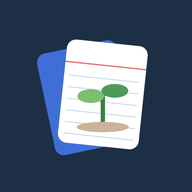

カードをタップすると答えが出ます。
答えが腑に落ちないカードは上へ。あとで一覧から確かめられます。

ブラウザのメニュー（︙）から「ホーム画面に追加」または「アプリをインストール」を選んでください。
スワイプかボタンで仕分けよう
取り込んだ単語帳と記録は、このブラウザの中だけに保存されます。生徒に配る場合は、生徒それぞれの端末で取り込んでください。
XPが減ると、木の段階が下がることもあります。その日に1枚でもめくれば、木はすぐ元気に戻ります。
栄養剤は何本でもためておけます。休んだあとにTOPで使うと、1本につき休んだ1日分が取り消され、減ったXPも戻ります。
学びの木・XP・連続日数は消えません。
どの範囲からランダムに出すか選んでください。枚数は設定の「1セットの枚数」に合わせます。